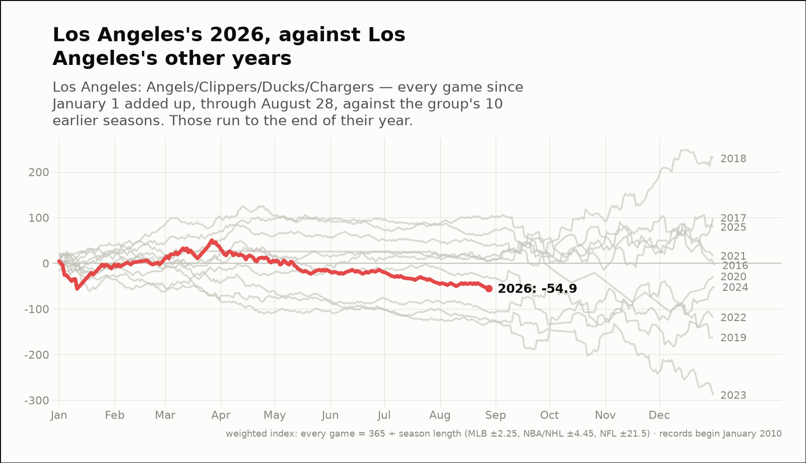
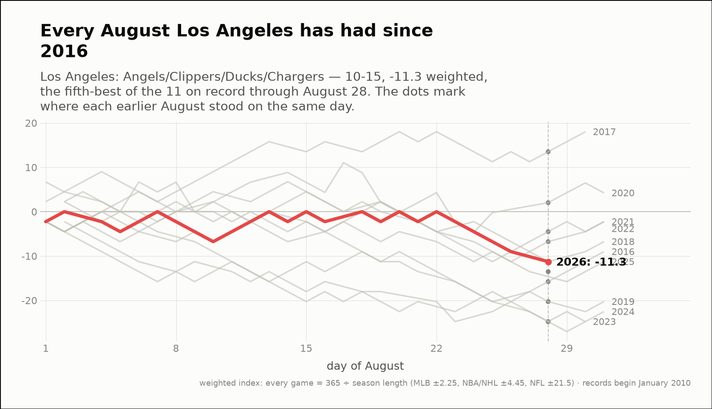
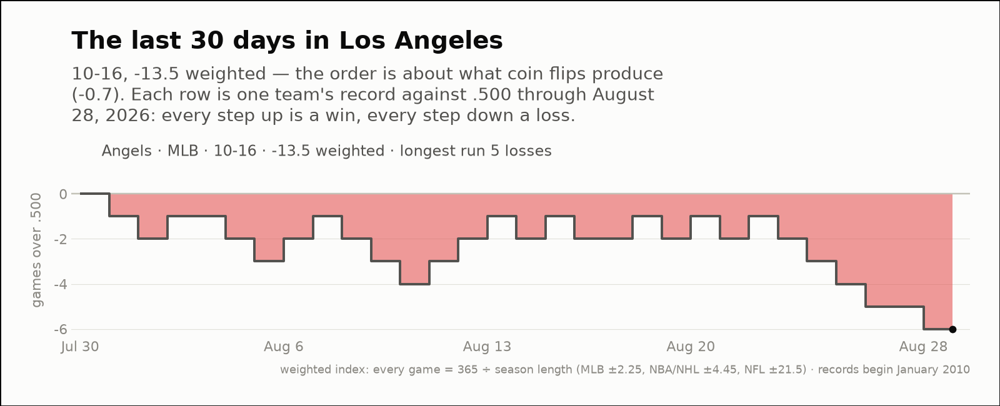

City of the day — Los Angeles
Los Angeles: Angels/Clippers/Ducks/Chargers
- 2026 so far
- 111-131, -54.9 weighted over 242 games; longest run 10 straight wins
- Order of results
- about as clumped as coin flips (+0.9)
- Earlier seasons (full-year weighted)
- 2016 -4.6, 2017 +99.3, 2018 +229.6, 2019 -162.7, 2020 -29.0, 2021 +16.0, 2022 -118.5, 2023 -288.7, 2024 -52.3, 2025 +79.4
- Last 30 days
- 10-16, -13.5 weighted; longest run 5 straight losses
- Window opens
- July 31, 2026
- August 2026 through day 28
- 10-15, -11.3 weighted — the fifth-best of the 11 on record
- Same August in earlier years (same stretch)
- 2016 -15.8, 2017 +13.5, 2018 -11.3, 2019 -20.3, 2020 +2.0, 2021 -6.8, 2022 -4.5, 2023 -24.8, 2024 -24.8, 2025 -13.5
| Team | Last 30 days | Weighted | Longest run |
|---|---|---|---|
| Angels | 10-16 | -13.5 | 5 straight losses |


